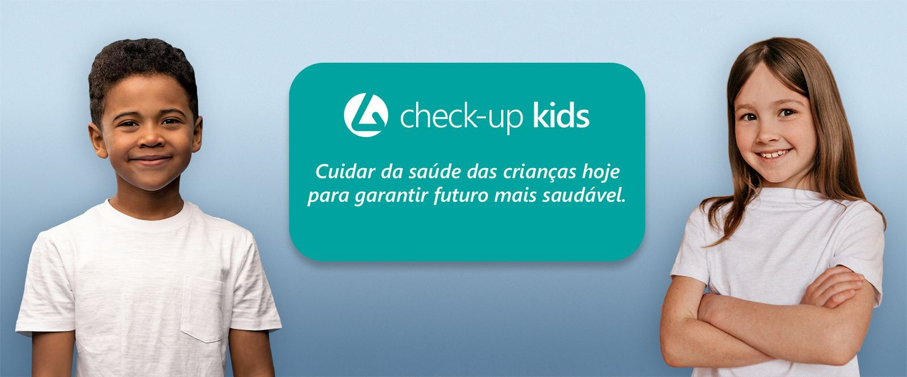

Check-up Kids
Cuidar da saúde das crianças hoje para garantir futuro mais saudável.
Check-up Kids
R$ 155,00
O Check-Up Kids do Laboratório Pagel é um programa abrangente que garante a saúde infantil através de exames preventivos essenciais. Inclui hemograma completo para avaliar a saúde do sangue, medição de glicose para monitorizar diabetes, e perfil lipídico para avaliar riscos cardiovasculares. Além disso, mede ferritina para identificar deficiências de ferro, vitamina D3 para a saúde óssea e imunológica, exame de urina (EQU) para função renal e infeções, e exame parasitológico de fezes (EPF) para detetar parasitas intestinais. Este pacote detalhado promove a saúde e o desenvolvimento equilibrado das crianças.
Observação: O Check-Up Kids do Laboratório Pagel é uma ferramenta preventiva essencial para a saúde infantil, oferecendo um conjunto abrangente de exames que permitem identificar precocemente possíveis problemas de saúde e promover intervenções eficazes. Este programa é indicado para pais que desejam garantir um acompanhamento médico completo e regular do desenvolvimento dos seus filhos.

Quais os exames estão inclusos?
- Hemograma completo
- Glicose
- Colesterol total, HDL, LDL
- Triglicerídeos
- Ferritina
- Vitamina D3
- EQU
- EPF
Perguntas frequentes do Check-up Kids
Para os exames de glicose e perfil lipídico (colesterol total, HDL, LDL, e triglicerídeos), é necessário um jejum de 8 a 12 horas. É importante que a criança não coma nada durante esse período, mas a ingestão de água é permitida. Para os outros exames, como hemograma completo, ferritina e vitamina D3, não é necessário jejum.
O hemograma completo é um exame que avalia diferentes componentes do sangue, como glóbulos vermelhos, glóbulos brancos e plaquetas. Ele é importante para detectar condições como anemia, infeções e problemas hematológicos. Esse exame ajuda a monitorizar a saúde geral da criança e identificar possíveis problemas precocemente.
A medição da glicose no sangue é crucial para monitorizar os níveis de açúcar e prevenir a diabetes. A diabetes pode afetar crianças, e a detecção precoce permite um tratamento adequado e o ajuste de hábitos alimentares para manter a saúde.
O perfil lipídico inclui a medição do colesterol total, HDL, LDL e triglicerídeos. Esses exames ajudam a avaliar o risco de doenças cardiovasculares. Mesmo em crianças, é importante monitorizar esses níveis para prevenir problemas futuros e incentivar hábitos de vida saudáveis desde cedo.
A ferritina é uma proteína que armazena ferro, e sua medição ajuda a diagnosticar deficiências de ferro, que podem causar anemia e impactar o desenvolvimento. A vitamina D3 é essencial para a saúde óssea e imunológica, e sua deficiência pode levar a problemas como raquitismo e baixa imunidade. Ambos os exames são cruciais para garantir um crescimento saudável.
Para o exame de urina (EQU), a amostra deve ser coletada preferencialmente na primeira urina da manhã ou após um período de pelo menos quatro horas sem urinar. A área genital deve ser limpa antes da coleta para evitar contaminações. Para o exame parasitológico de fezes (EPF), a amostra deve ser coletada em um recipiente limpo e seco, sem contaminação por urina ou água do vaso sanitário. Ambas as amostras devem ser entregues ao laboratório o mais rápido possível após a coleta.
Veja também o guia de preparo de exames e as dúvidas frequentes.